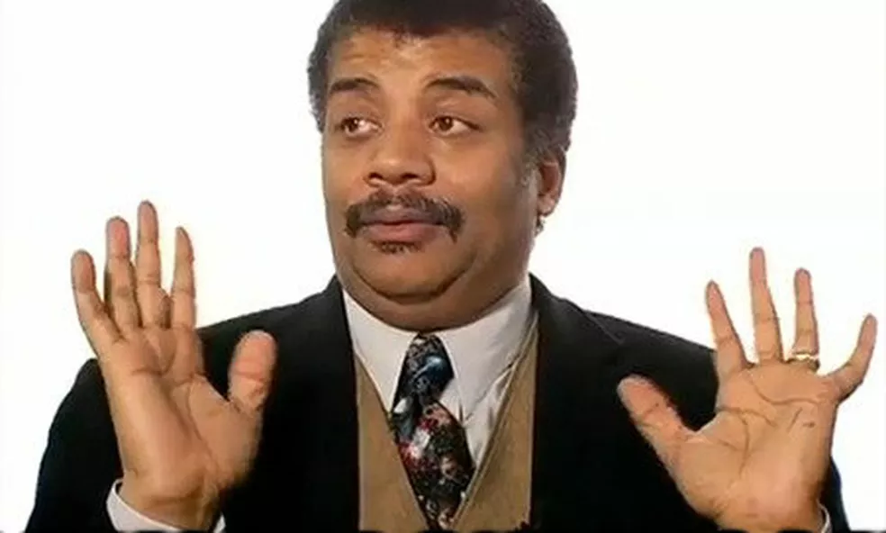
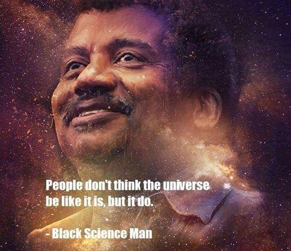

Born: 1958
Death: Not yet cause he a 🐐💯💯💯😎😎😤😤⛔🎩.  \Neil was the first black person/scientist to earn the prestigious award that is what he is famous for✔✔✔✔.
Learn more about da 🐐 on this link!Accomplishments of Dr. Neil deGrasse Tyson I chose to research Dr. Neil deGrasse Tyson because he has been an extraordinary role model for many people, both young and older. He has helped make learning about astronomy appeal to a much bigger audience than most have previously been able to do. He is a very intelligent man and has made many contributions to this world in his lifetime thus far.
Dr. Neil deGrasse Tyson was born October 5, 1958 in New York City, New York. He graduated from the Bronx High School of Science and went on to earn his BA in Physics from Harvard University, his MA in Astronomy from the University of Texas at Austin and his PhD in Astrophysics from Columbia University. Dr. Tyson is the recipient of eighteen…show more content…
According to Dr. Tyson’s profile at www.biography.com, in 2001, Dr. Tyson was appointed by President Bush to serve on a 12-member commission that studied the Future of the US Aerospace Industry and again in 2004 to a 9-member commission on the Implementation of the United States Space Exploration Policy. In 2006, the head of NASA appointed Dr. Tyson to serve on its prestigious Advisory Council. For five seasons, beginning in the fall of 2006, Tyson appeared as the on-camera host of PBS-NOVA's spinoff program NOVA ScienceNOW, which is an accessible look at the frontier of all the science that shapes the understanding of our place in the universe.
As director of the Hayden Planetarium, Dr. Tyson strayed away from traditional thinking in order to keep Pluto from being referred to as the ninth planet in exhibits at the center. Dr. Tyson has explained that he wanted to look at commonalities between objects, grouping the terrestrial planets together, the gas giants together, and Pluto with like objects, and to get away from simply counting the planets. In 2006, the International Astronomical Union (IAU) confirmed this assessment by changing Pluto to the dwarf planet classification (Hayden Planetarium)
He is a great scientist and has helped predict alot of what things would happen in simplified ways too! Explaining and talking in interviews and podcasts.
I think we should get a pet turtle for the class.